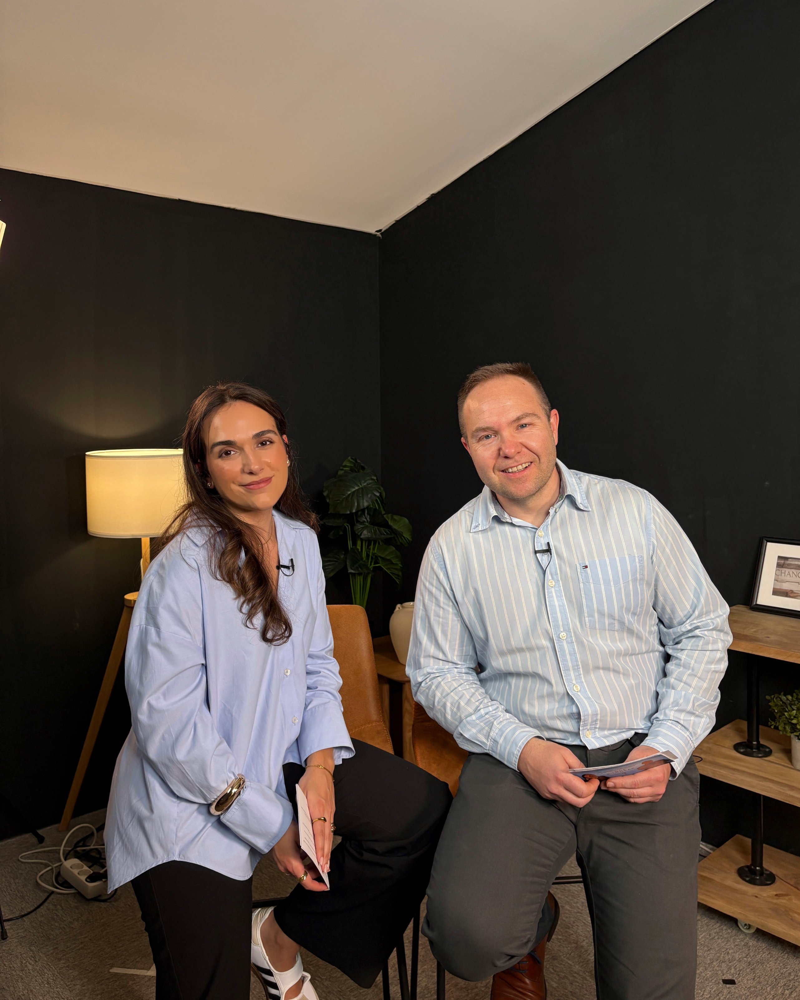
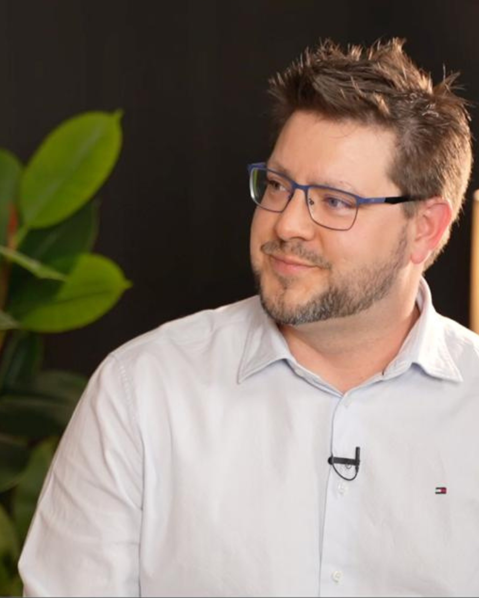
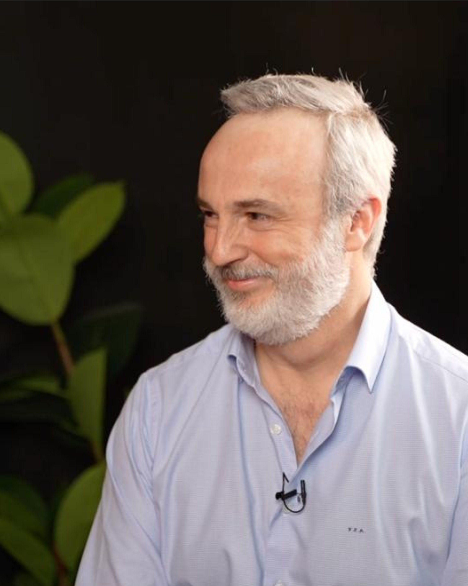
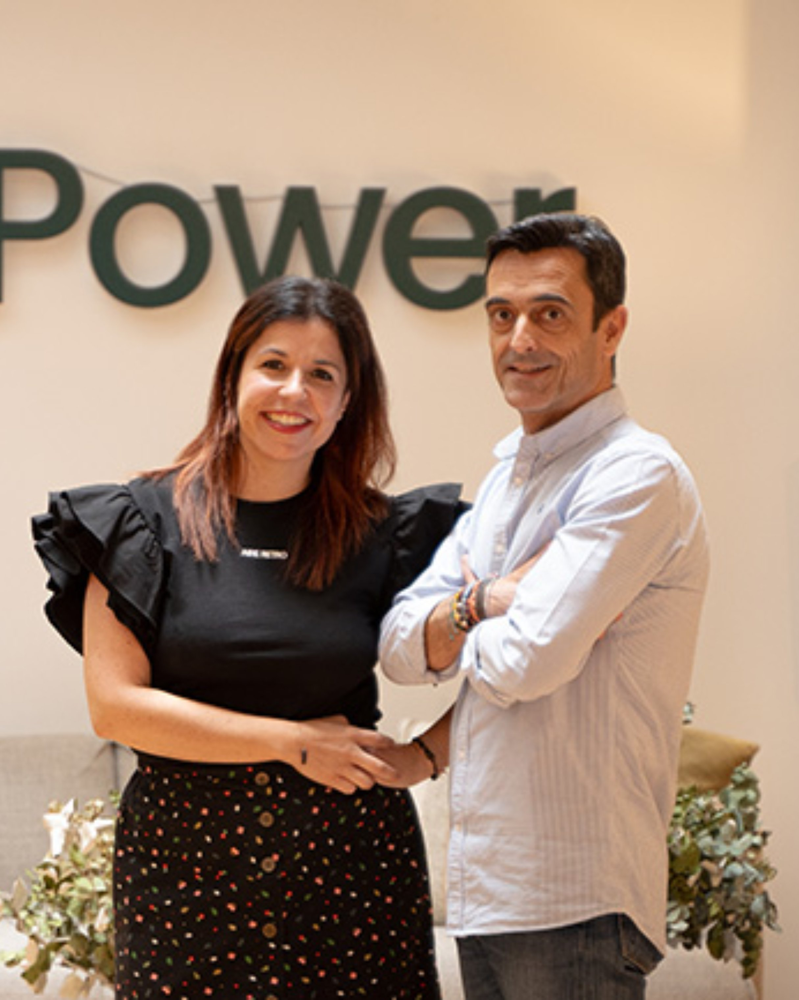

Las verdaderas historias detrás de la industria farmacéutica
La perspectiva real de quiénes trabajan en la industria. Sin guion, sin corsé, lejos del enfoque corporativo, y con un solo objetivo: conectar a los profesionales de hoy con los de mañana, con otros como ellos, y con todo el que tenga ganas de conocer este sector de verdad, desde dentro.
Nos cuentan lo que piensan, lo que viven, lo que ven: dos profesionales del sector farmacéutico sin miedo a preguntar en voz alta lo que otros siempre han querido contar.
Lleva años en ensayos clínicos - desde el entorno hospitalario hasta CROs y Sponsor a nivel global. Su perspectiva combina la mirada valiente de quien se incorpora joven en un sector complejo con el criterio sólido de quien ha estado en primera línea, participando activamente en cómo la investigación se traduce en opciones reales para los pacientes
in Ver perfil en LinkedIn17+ años en la industria farmacéutica, construyendo su carrera en la intersección entre departamento comercial y estrategia de negocio — desde la primera línea hasta roles globales en oncología. Lidera equipos multidisciplinares en entornos complejos, combinando visión estratégica con ejecución excelente. Siempre centrado en el desarrollo de talento y en sacar el máximo de cualquier buena idea, Jaime divide su tiempo entre el entorno corporativo, sus clases de Marketing & Strategy, y la co-fundación del podcast +Que Píldoras junto a Miren.
in Ver perfil en LinkedIn+Que Píldoras es el podcast en español dedicado a explorar las historias reales que mueven la industria farmacéutica. Hablamos de liderazgo, carreras profesionales, valores personales, habilidades que importan y las curiosidades del día a día de quienes trabajan para que los medicamentos lleguen a los pacientes.
Cada episodio es una conversación honesta con profesionales de distintos niveles y roles — desde perfiles en desarrollo hasta directivos senior — de compañías farmacéuticas nacionales e internacionales que comparten su experiencia, sus desafíos y lo que realmente significa trabajar en este sector.

Arrancamos el podcast que la industria farmacéutica necesitaba: conversaciones honestas, historias reales y todo lo que no se cuenta.

¿Qué tienes que hacer realmente para trabajar en Medical Affairs? Spoiler: no es el camino que te han contado.

De técnico de emergencias a Medical Advisor con doctorado: la trayectoria que nadie espera y todo lo que nadie te cuenta sobre Medical Affairs.

Nuestra audiencia son profesionales del sector que toman decisiones en los principales laboratorios, alumnos de hoy que serán profesionales del mañana, y todo aquel que quiera saber qué hay detrás de la industria farmacéutica y los múltiples empleados que tiene.
Profesionales del sector en todas sus posiciones, desde especialistas hasta directivos, con experiencias y perspectivas diversas
Commercial Directors, Business Unit Heads, Country Managers y perfiles estratégicos que toman decisiones en el sector
Estudiantes de másteres especializados en farma que serán los líderes del mañana
Cualquier interesado en conocer el sector por dentro
Un programa estructurado y personalizado para entrar o crecer en el sector farmacéutico. Con Jaime Manzanera y Miren Alonso.
17 años de experiencia nacional e internacional en la industria. Experiencia real como mentores. Y una red de profesionales activos dispuestos a abrirte puertas.
Solicitar Discovery Call gratuita →Sin compromiso. Te explicamos el programa, valoramos juntos si tiene sentido y resolvemos todas tus dudas.
podcast@masquepildoras.com →